从偶然路过一家小店开始，慢慢走进一段和拼豆有关的友谊与成长
一开始，我和朋友只是路过仿古步行街，偶然看见一家很小很小的拼豆店，名字叫“玩个猫线”。当时只是觉得新鲜，想着反正来都来了，不如进去试试看。
没想到真正坐下来之后，我很快就被这种手作方式吸引住了。它既有很直接的成就感，又能让人慢下来，一颗一颗把注意力放回手边。这种感觉后来不只是留在拼豆作品里，也延伸成了我和店长、朋友之间更长的一段联系。
一开始，我和朋友只是路过仿古步行街，偶然看见一家很小很小的拼豆店，名字叫“玩个猫线”。当时只是觉得新鲜，想着反正来都来了，不如进去试试看。
没想到真正坐下来之后，我很快就被这种手作方式吸引住了。它既有很直接的成就感，又能让人慢下来，一颗一颗把注意力放回手边。这种感觉后来不只是留在拼豆作品里，也延伸成了我和店长、朋友之间更长的一段联系。
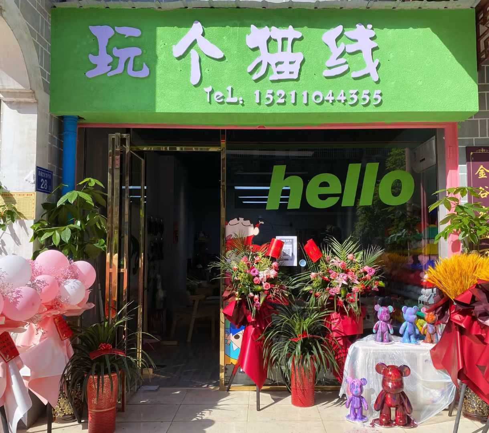
那天我和朋友只是像平常一样走过仿古步行街，原本没有特意安排要做什么，结果就在街边看见了这家叫“玩个猫线”的小店。它不大，却很显眼，店内有两只小猫，也带着一种很年轻、很轻松的气氛。
对我来说，这种相遇很像是生活里突然冒出来的小惊喜。你本来只是路过，但因为一个小小的好奇心，后面整条经历就慢慢展开了。
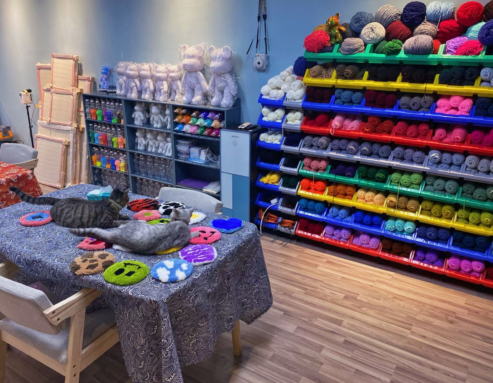
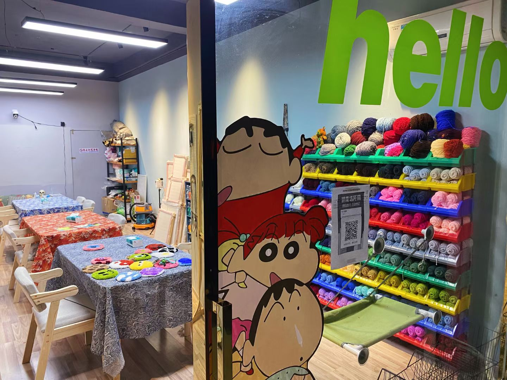
刚开始我只是抱着“试试看”的心态，但真正摆起拼豆之后，很快就感受到这种手作的独特节奏。它并不复杂，却会让人很自然地进入专注状态，一颗豆一颗豆地把图案慢慢拼出来。
更有意思的是，拼豆的反馈来得很快。你不需要等很久，就能看到作品从零散的小颗粒慢慢变成一个完整图案，这种即时又扎实的成就感特别吸引人。
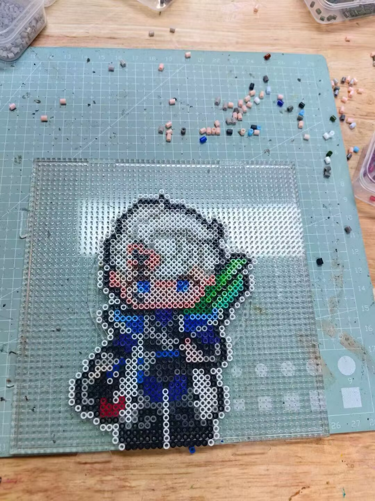
后来接触下来，我发现店长也是一个很年轻、很有活力的人。他把拼豆店做成自己的创业方向，本身就带着一种很勇敢的意味，而这种热情也很容易感染到来店里的人。
我们聊天的时候会觉得彼此很聊得来，不只是聊作品，也会聊兴趣、店里的想法和对手作的看法。慢慢地，这家店对我来说就不只是一个消费的地方，而是一个让我愿意持续回来、也愿意继续关注的小空间。
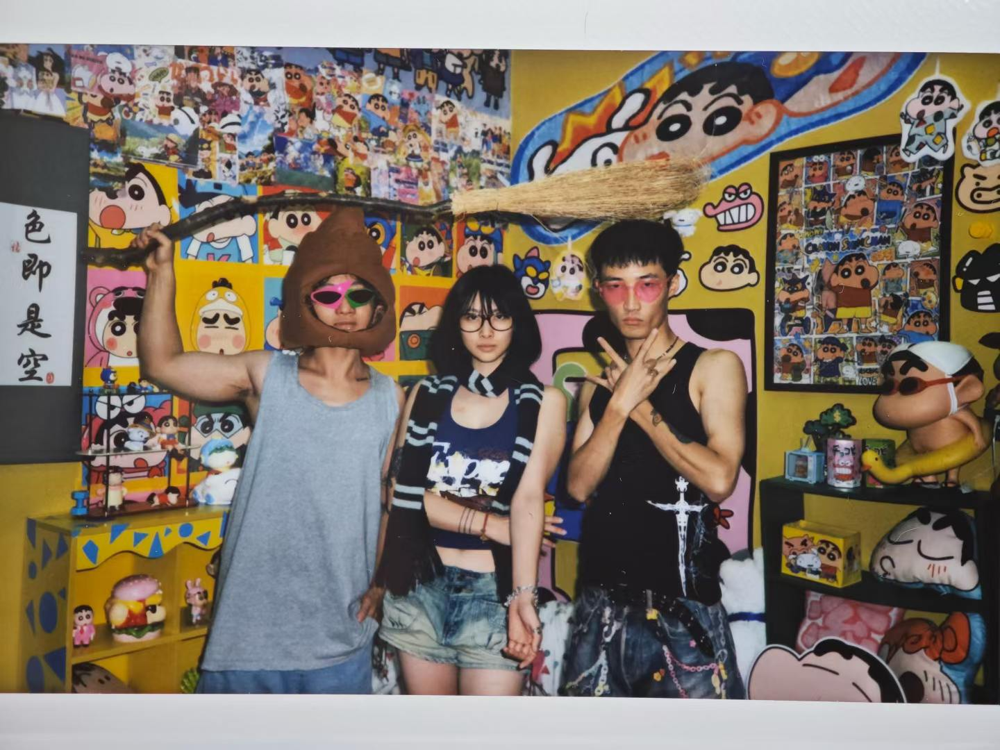
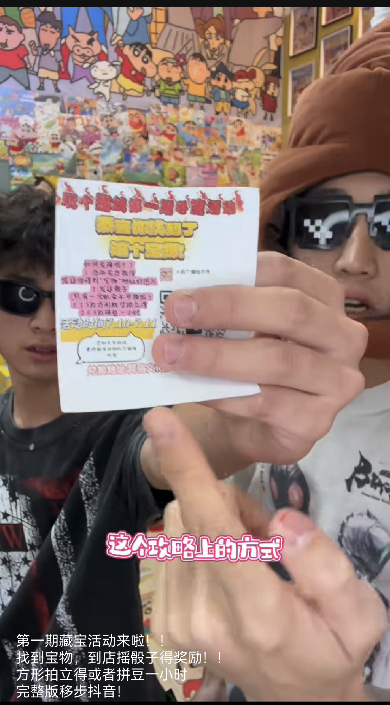
因为自己真的觉得好玩，我后来也慢慢把拼豆这个活动介绍给了周围的朋友。结果比我想的还自然，很多人一接触就会马上产生兴趣，因为它好上手、好分享、也很容易得到完成后的满足感。
那种感觉很奇妙，你一开始只是一个路过的人，后来却成了把这件事继续传出去的人。看到朋友们也开始喜欢上拼豆，我会觉得这份快乐被真正延续了下来。
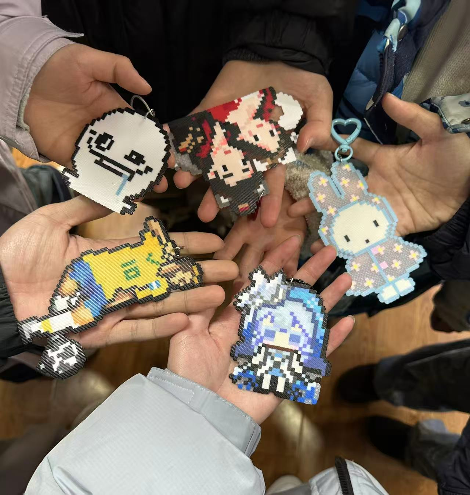
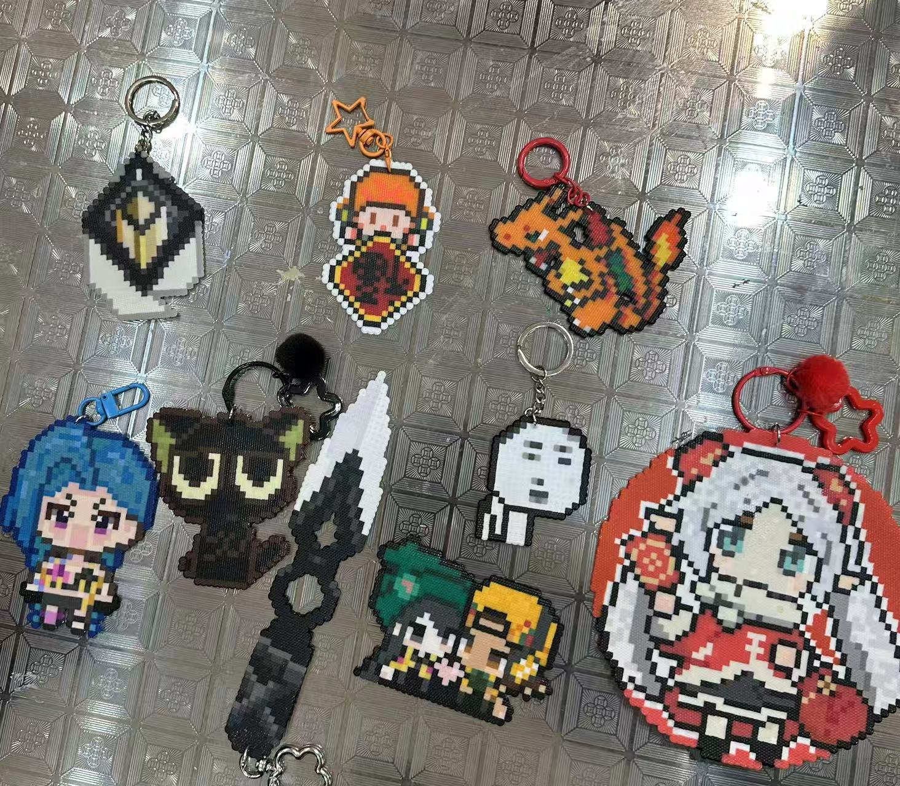
后来店长的店慢慢又多开了一家，我会真心替他高兴。因为在这个过程中，我既是被这家店吸引的人，也是把它介绍给别人、让更多人知道它的人。
这种感受很特别。拼豆不只是给年轻人多了一种娱乐方式，让人沉下心、快速获得成就感，它还让我在和店长的友谊、和朋友的分享里，真实感受到“我也做成了一件有意义的事”。
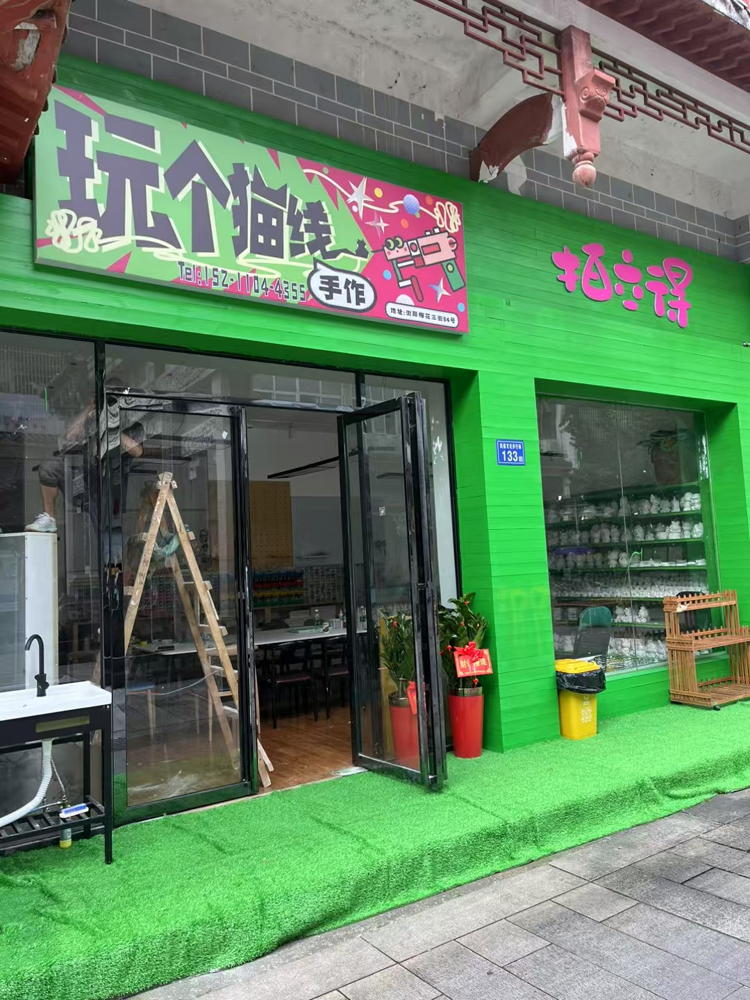
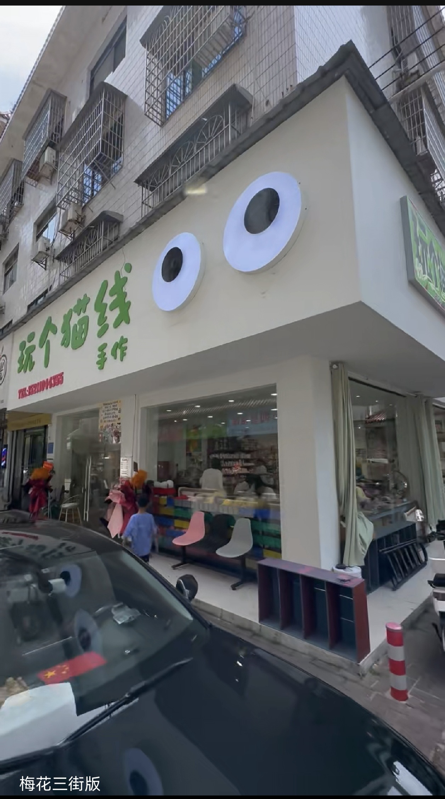
回头看这段经历，我会觉得拼豆真正珍贵的地方，不只是“做出了几个成品”，而是它把专注、分享、友谊和正向反馈都串在了一起。它让年轻人之间多了一种可以一起沉下心来的娱乐方式，也让我从一段偶然的相遇里，收获了持续很久的连接。
如果把整条故事线缩成几个关键词，那我最想留下来的不是“我做了多少作品”，而是这些作品之外真正发生过的变化。
最开始只是路过步行街，但正是这种偶然，让后面的一切慢慢发生。
我和店长、朋友之间的关系，也因为拼豆这件事被慢慢串联了起来。
从作品完成，到店铺成长，再到把它介绍给别人，我能感受到很明确的正向回应。
拼豆对我来说，已经不只是一个手工活动，而是一段我愿意反复回想、也愿意继续分享给别人的经历。
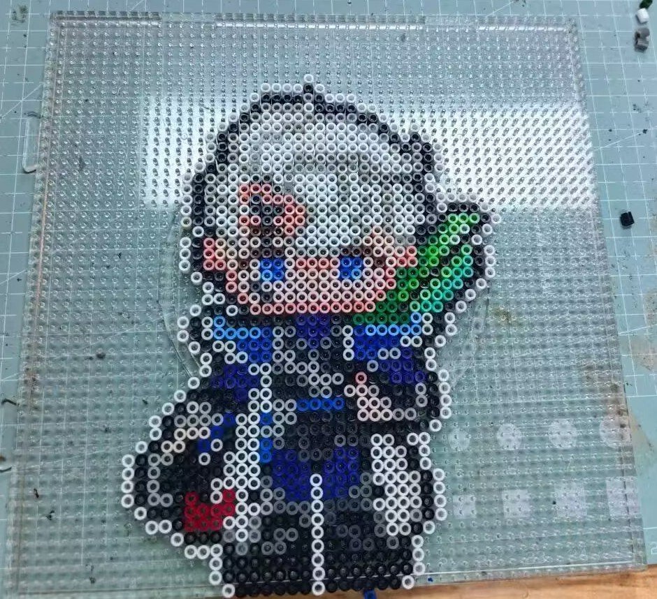
这是我第一次玩拼豆做的成品，拼的是英雄联盟里面的厄斐琉斯。第一次做的时候不知道天高地厚，作为新手，这个花了我三四个小时。
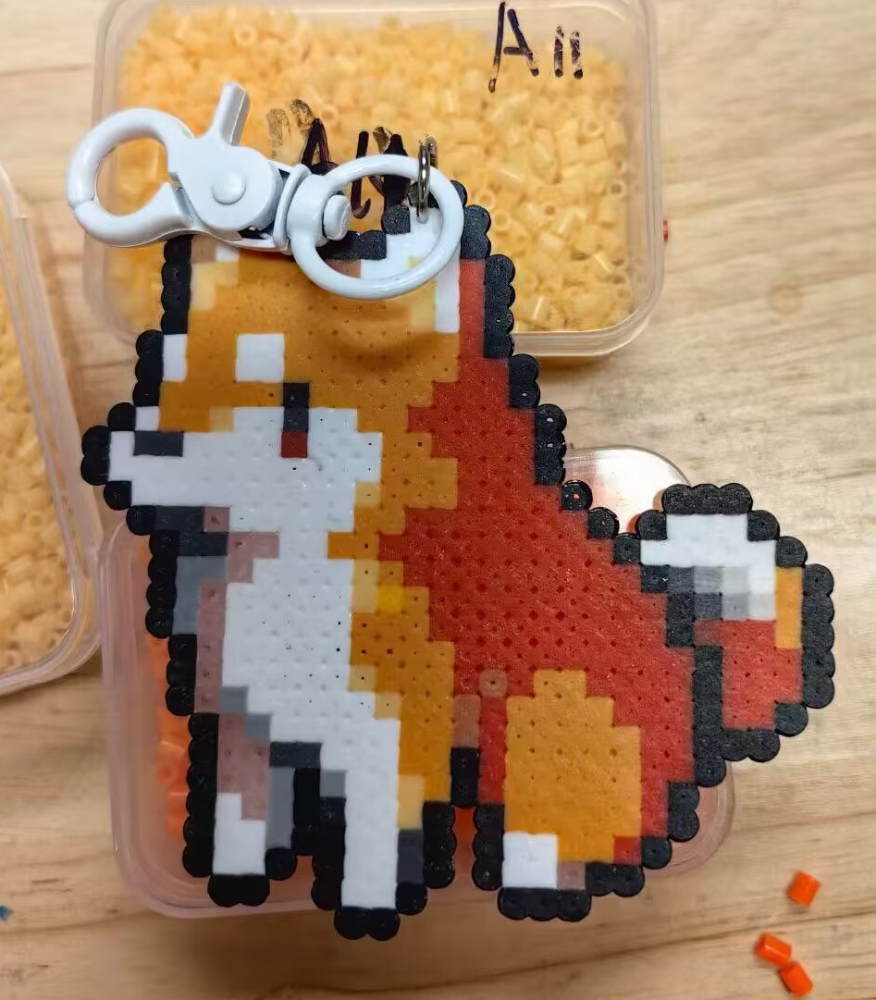
这个小狗是我第二次做拼豆完成的作品。吸取了上次的教训，这次先拼了一个颗数比较少、完成节奏更轻松的小狗图案。
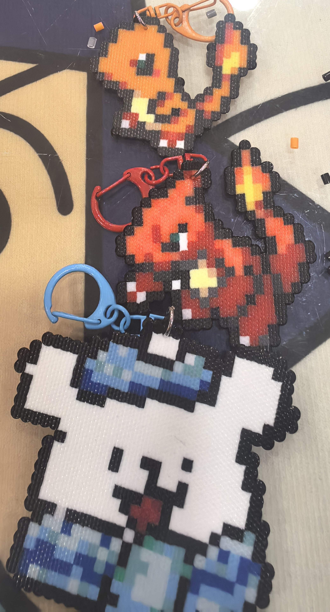
这就是我轻车熟路之后，在上个寒假做的作品。和前面相比，同样的时间里我已经能更稳定地完成多个作品了。
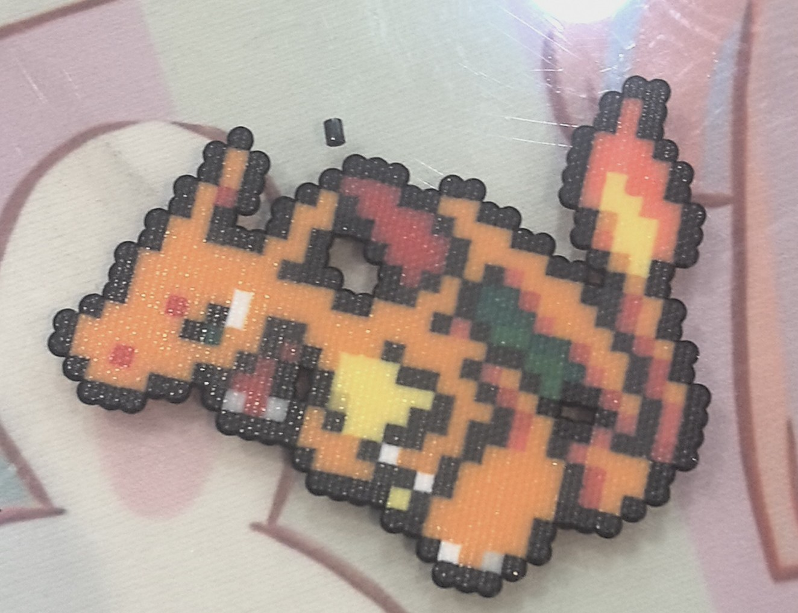
这里算是把上次没有完成的想法继续补完了，我把神奇宝贝里小火龙的三个进化阶段全部拼了出来。